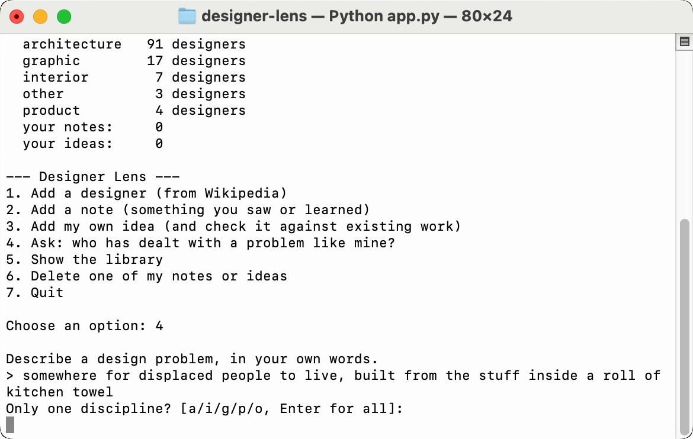
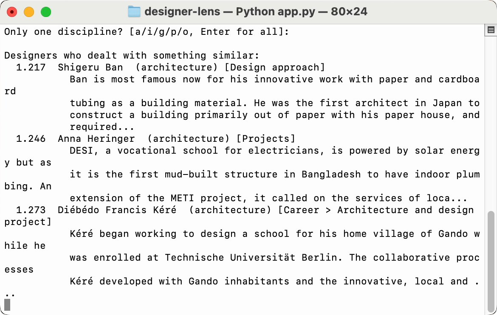
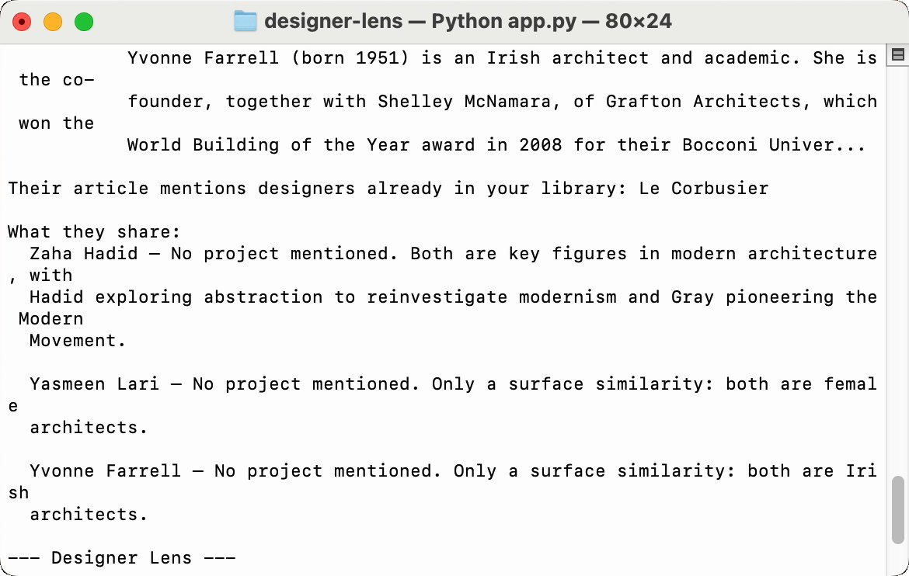
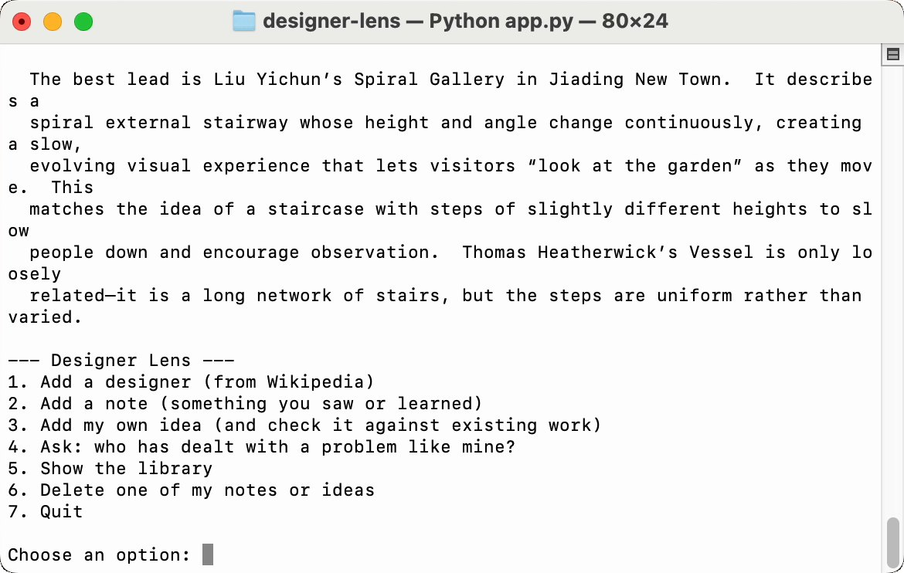

Designer Lens
A searchable library of the designers I follow — mostly architects, plus graphic, interior and product designers. Adding is the core of it: every time I add a designer, a note or one of my own ideas, it searches the library straight away and tells me what the new thing connects to.
When I design, I often don't know that someone has already solved a similar problem, or what a technique is even called. An ordinary search needs the right words. This one searches by meaning.
It finds meaning, not words
My question shares no words with the passage it finds. I describe the inside of a kitchen-towel roll; Wikipedia says "cardboard tubing".


Then a language model writes a short brief, using only those passages:
Brief:
Looking for: examples of low-cost, recyclable, paper-based shelters for
displaced people.
Shigeru Ban
He is known for using paper tubing as a building material. His paper house
and DIY refugee shelters show how paper can be used to create emergency
housing for displaced people.
Anna Heringer
Her work is loosely related; she uses local materials such as mud and bamboo,
but not paper. ...
Wikipedia articles → ~150-word passages → embeddings (all-MiniLM-L6-v2) → ChromaDB → closest passages → a short brief (gpt-oss-20b via Groq), written only from those passages
Every addition is a search
Whatever I add is used as a query straight away, so the library answers back: who a new designer is close to, and what a new note connects to.


What's inside
I started from my own list of 210 designers and studios. The app found an English Wikipedia article for 119 of them, cut each article into passages of about 150 words, and stored them in a vector database: about 2,200 passages, each one tagged with the designer, discipline and section. Designers without an article come in through my own notes.
What I learned
- Names collide
- The source isn't neutral
- One loud voice
- Similar isn't connected
- Distance isn't judgement